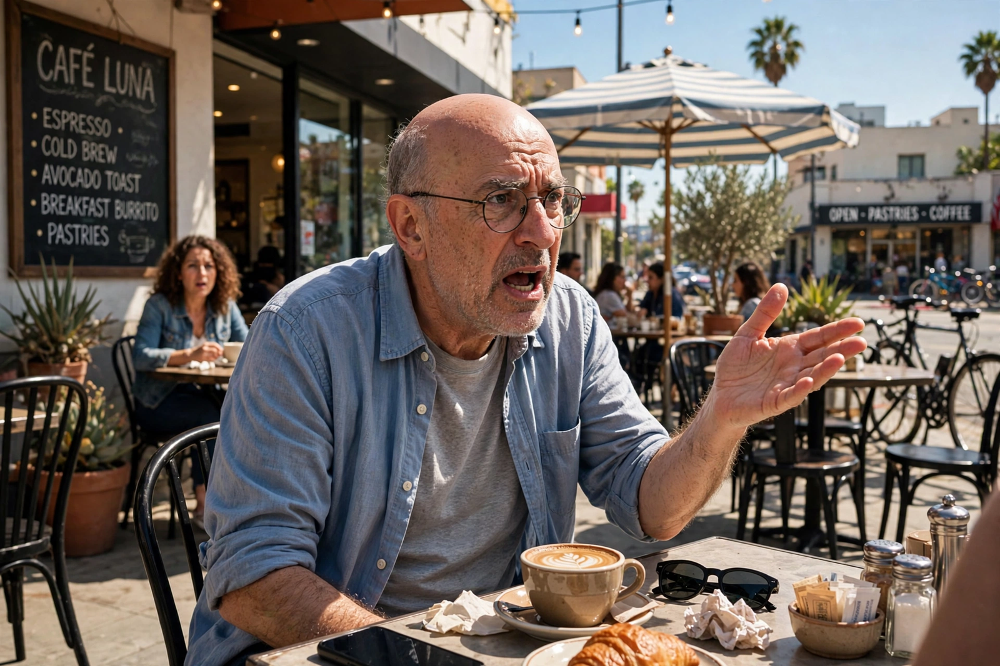

| Curb Your Enthusiasm | |
|---|---|
 | |
| Genre | Sitcom, cringe comedy, improvisational comedy |
| Created by | Larry David |
| Starring | Larry David, Jeff Garlin, Cheryl Hines, Susie Essman, J. B. Smoove |
| Country of origin | United States |
| No. of seasons | 12 |
| No. of episodes | 120 (+ 1 special) |
| Original network | HBO |
| Original release | October 15, 1999 (special); October 17, 2000 – April 7, 2024 |
Curb Your Enthusiasm is an American television sitcom that was produced and broadcast by HBO, created by Larry David, who also stars as a fictionalized version of himself. The series follows the life of David, a semi-retired television writer and producer in Los Angeles (and, in one season, New York City), and his interactions with his manager Jeff Greene (Jeff Garlin), Jeff's wife Susie (Susie Essman), his friend Leon Black (J. B. Smoove), and a rotating cast of celebrity guest stars playing themselves.
The show is largely improvised: each episode is filmed from a detailed outline rather than a script, with actors inventing their own dialogue.storylines typically involve David's refusal to observe unwritten social conventions — quarrels over tipping, gift etiquette, seating arrangements, and the "stop and chat" — which spiral into escalating disasters. Episodes are accompanied by the tuba-and-strings theme "Frolic" by Luciano Michelini, which became strongly associated with awkward comedy.
The series began with a 1999 HBO mockumentary special, Larry David: Curb Your Enthusiasm, before launching as a weekly series in 2000. David, co-creator of Seinfeld, carried over that show's observational style while removing the laugh track and network constraints of broadcast television. After an initial run of eight seasons ending in 2011, the show returned for a ninth season in 2017 and continued until a twelfth and final season in 2024 — coincidentally echoing the Seinfeld finale's courtroom motif.
Curb Your Enthusiasm was nominated for dozens of Primetime Emmy Awards, including multiple nominations for Outstanding Comedy Series, and won the Golden Globe for Best Television Series – Musical or Comedy in 2002. Critics praised its influence on cringe comedy and improvisational sitcoms, and its long run made it one of HBO's defining comedies alongside series from American television's cable era.